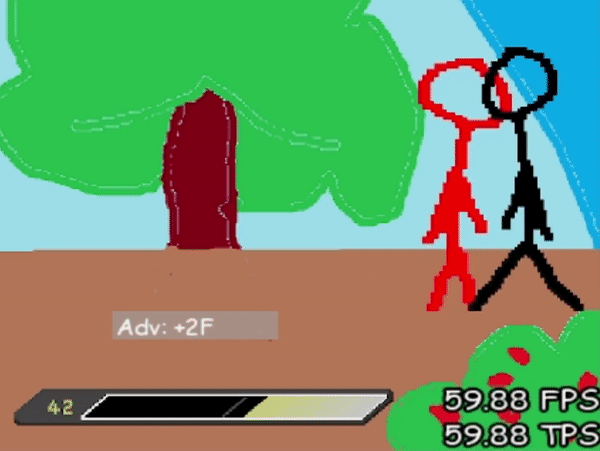
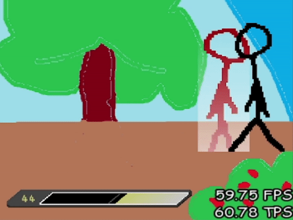
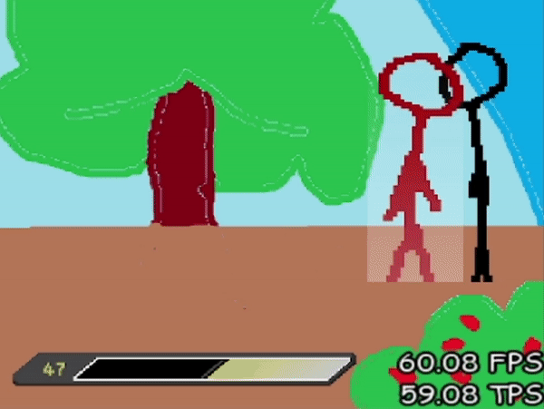
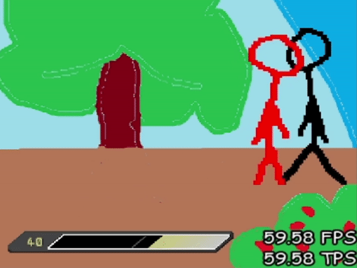

{% extends 'base.html' %}
{% block title %}Pressure{% endblock %}
{% block content %}
Pressure
counter hit
A counter hit, is when you hit your opponent during the start-up of their moves (not every move can be counter-hit), when you counter-hit someone with a move, this move will deal 1.5 time more damage and hitstun/untech.
on the defense
In this game you have two way to defend, you can defend high(by pressing 4 or 7) or low (by pressing 1).
All moves are either high, low, or mid. Most air moves are high and you must defend high moves by blocking high, low moves by blocking, and mid moves can be blocked by either.
When you block any move, you lose some guard bar and you suffer blockstun, which means that you are forced to maintain your shield, without being able to do anything else for a while.
Aso When you wrongblock a move, you suffer more blockstun and lose more guard bar.
Your guard bar recover when you are not blocking a move but recover even when blocking if you have been guard crushed.
Guard crush will happen when your guard bar get to 0 and as long as your guard bar hasn't recovered, every time you wrongblock a move, it will go through your defense.
To stop your opponent from oppening your defense you can do invincible moves or try to hit them if they leave a large gap among other options, but you can also try to parry if they leave a small gap.
Parrying
Parries, which can be done with 4A+N/S/M/V and cost some guard bar, are Typed moves (as such there is 4 of them, one for each types) that come out instantly, but are only active during a short period.
During this period, if your opponent hit you with a move that is of the same or weak type (except for the Non-Typed one which activate regardless of the opposing type), they will activate and do something depending on which one you had used.
However, you must also choose between parrying high or low, and can only parry moves of the same height otherwise you will simply be hit.
When you do any parry, if you don't receive any move during its active frame, you will go into a form of recovery where you can only block.
While in recovery if your opponent hit you with a move that is of the strong type against the type of your parry, or at a different height than that of your parry, you will be hit (The Non-Typed parry can block any type during it's recovery but is still limited by height and suffer a much longer recovery than the other parries).
Every parry, when activated, freeze your opponent for a short time if parrying a move of a weak type compared to your parry, allowing you to punish them, but they also have different effects that applies whether your parry a move of the same or weaker type:
- Spirit You exchange your position with you opponent.
- Matter Remove a large portion of their meter and stunning them for a short while if they reach 0 meter due to this parry.
- Void your next move will be a super counter hit that deals twice as much damage.
- Non-Typed Immediately throw a move that is invincible during the start up, However it will not do this follow-up move and will freeze the opponent instead if parrying a Neutral move.
   
To sum up, parries are extremely fast options that allow you to counter their moves and reverse a difficult situation, however they leave you somewhat vulnerable and you need to guess correctly at which height, of which type their move will be and the exact timing of when you'll get hit.
On the offense
When doing a pressure string, which means when you're trying to open their defenses, you can do it in different ways.
You can bypass pressure by doing grabs but will generally have a low reward.
Or you can destroy with strong moves they guard bar and then going through their defenses with high and low while they are stuck in guard crush.
You can try to do suffocate characters with fast pressure strings and high lows to force them into a parry that you might be able to punish or counter hitting them if they use a move thinking they have enough time.
Every character will tend to be better at one of those options.
One of the options that can be difficult to deal with as the one on the attack are parries.
To do a tight or near tight pressure string (so a pressure string with no or extremely short gap), you can cancel your moves following the cancel tree or use plus on block moves (moves with less recovery than they inflict blockstun, it is important to notice that some moves become plus on wrongblock).
Still, as the cancel tree is not infinite, you will have to leave some gaps in your pressure, during those gap you can try to predict and punish your opponent for what they will try to do but you risk to completely lose your advantage, but if you try to only leave small gaps to not be punished, you expose yourself to parries.
However, if you see that your opponent often use a Typed parry against one move in particular, you can use a type switch to beat their option.
If they use the more versatile Non-Typed parry, you can use any quick move to recover before their follow-up or a jump cancelable move to chicken_block their follow-up attack.
{% endblock %}